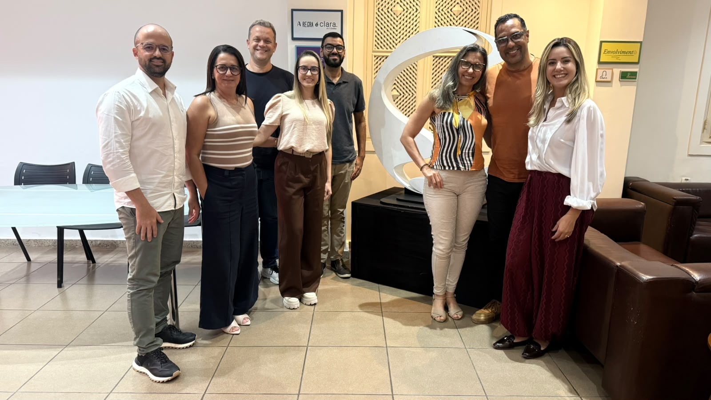

A TV Rio Sul realizou nesta terça-feira (29), em Volta Redonda (RJ), mais uma edição do Café & Negócios. O encontro reuniu profissionais da publicidade para discutir novas possibilidades de comunicação e estratégias para o mercado da região.
A proposta do evento é compartilhar as novidades do mercado publicitário e abrir caminhos estratégicos para o desenvolvimento de campanhas no Sul Fluminense e na Costa Verde.
O ponto central do encontro foi a integração entre plataformas. Foram apresentadas soluções que conectam a televisão aberta, os portais g1 e ge e o streaming Globoplay, mostrando como esses canais podem trabalhar juntos numa mesma campanha — cada um cumprindo um papel diferente na jornada do público.
Para quem anuncia na região, a mensagem é clara: alcance e relevância não dependem mais de um único meio. Combinar a força da TV aberta com a presença digital e o consumo sob demanda permite falar com o público certo, no momento certo, em mais de um ponto de contato.
Com informações do g1 Sul do Rio e Costa Verde. Leia a matéria original.